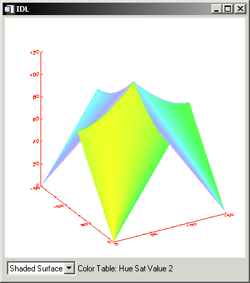

Draw wi dgets are graphics windows that appear as part of a widget hierarchy rather than appearing as an independent window. Like other graphics windows, draw widgets can be created to use either Direct or Object graphics. Draw widgets allow designers of IDL graphical user interfaces to take advantage of the full power of IDL graphics in their displays. See WIDGET_DRAW for a complete description of the function used to create draw widgets.
|
 |